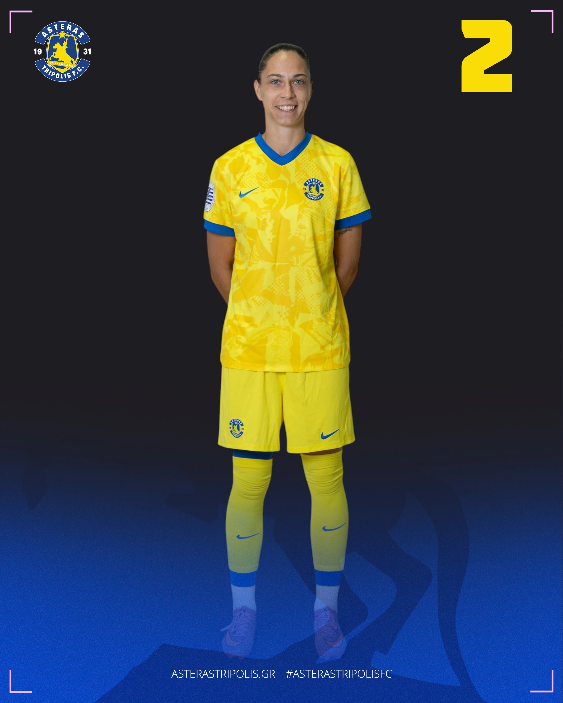

01 / TRANSFER · 2026/27
Katrin Kirpu
ŽNK Agram→LASK Frauen
From Croatia to Austria: Katrin joined LASK Frauen for the next chapter of her career.
VIEW PLAYER PROFILEVERO / OUR WORK
Transfers, renewals and appointments. The next chapters of the players and coaches we represent.
Every career has its own next step.
From a first move abroad to a renewal that builds continuity, these milestones reflect different paths through the game.
Explore eight career milestones, with links to the people behind each move.
01 / TRANSFER · 2026/27
From Croatia to Austria: Katrin joined LASK Frauen for the next chapter of her career.
VIEW PLAYER PROFILE
02 / TRANSFER · 2026/27
Anna-Maria joined Olympiacos following her time with Trikala 2011, continuing her goalkeeping career in Greece.
VIEW PLAYER PROFILE
03 / TRANSFER · 2026/27
Joanna moved from OFI to Asteras Tripolis, agreeing a new chapter through 2027.
VIEW PLAYER PROFILE
04 / LOAN · 2026/27
Marina joined Medyk Konin on loan from GKS Katowice for the 2026/27 season.
VIEW PLAYER PROFILE
05 / RENEWAL · 2026/27
Grigoria renewed with Panathinaikos through 2027, continuing her career with the club.
VIEW PLAYER PROFILE
06 / TRANSFER · 2025
Maria moved from Apollon Ladies to Athlone Town, taking her goalkeeping career from Cyprus to Ireland.
VIEW PLAYER PROFILE
07 / APPOINTMENT · 2026/27
Martin moved from Asteras Tripolis to Pogoń Szczecin as head coach.
VIEW COACH PROFILE
08 / APPOINTMENT · 2026/27
Erik joined the coaching team at Pogoń Szczecin as assistant and fitness coach.
VIEW COACH PROFILEA move should fit the individual: their football, ambitions and the environment around them.
Behind every announcement is a person making an important career decision.
A renewal can be just as important as a transfer. Progress also comes from building on the right foundations.
YOUR NEXT CHAPTER
Are you a player, coach or club looking for a considered next step?
START A CONVERSATION